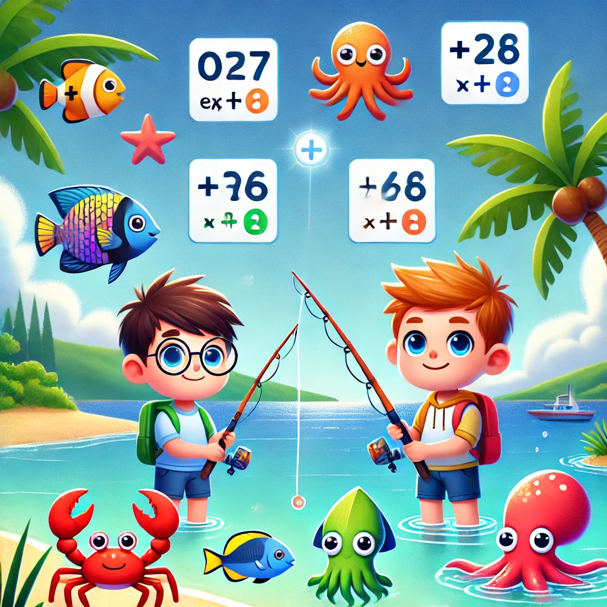
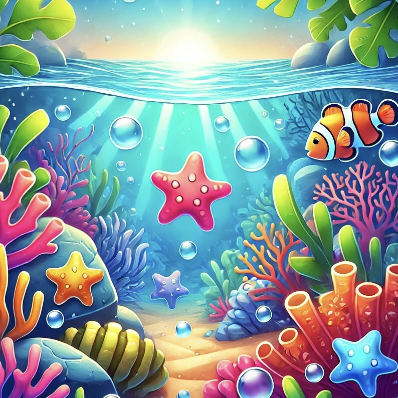

Fishy Powers Oyunu
Fishy Powers, çocukların matematiksel düşünme becerilerini geliştirmeyi hedefler.
- Oyuncuların, doğru balık ve insan eşleşmelerini yaparak üslü ifadelerin sonuçlarını öğrenmeleri beklenir.
- Doğru eşleşmeler oyuncuya puan kazandırırken, yanlış eşleşmeler puan kaybettirir.
- Her yeni turda, rastgele oluşturulan sayılar ve üslü ifadeler oyunun yeniden oynanabilirliğini artırır.
- Oyuncular, her turda daha fazla öğrenerek matematiksel becerilerini geliştirebilir.
Amaç, mümkün olduğunca çok doğru eşleşme yaparak yüksek puan elde etmektir!

Star Finders Oyunu
Star Finders, oyuncuların dikkat, gözlem ve keşif becerilerini geliştirebileceği eğlenceli bir oyun deneyimi sunar.
- Oyuncular, oyun alanına rastgele yerleştirilen yıldızları bulmaya çalışır.
- Her doğru tıklama ile puan kazanırken, yanlış bir noktaya tıklamak puan kaybettirir.
- Her seviyede tüm yıldızları bulana kadar ilerlemek hedeflenir.
- Oyuncular, çevreyi gözlemleme yeteneklerini test ederek eğlenceli bir keşif yolculuğuna çıkar.
Amaç, her seviyede en yüksek puanı kazanarak tüm yıldızları bulmaktır!